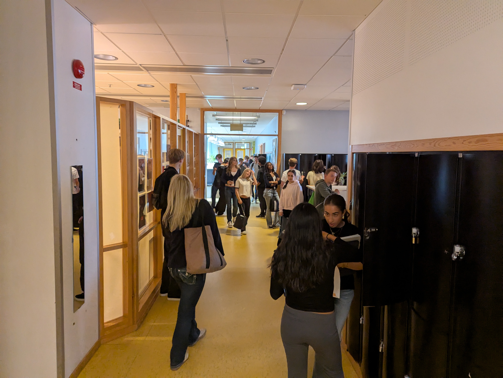

Östras utbildningar
Östra gymnasiets flitiga elever är fördelade på tre högskoleförberedande program (EK, NA, SA & TE) och ett yrkesprogram (El- & energi). Estet Musik finns också om du är bra nog. Plus Språkintroduktion och Anpassad gymnasieskola.
För att avgöra vilken utbildning som passar just dig bäst i relation med oss och håller intresset uppe i tre läsår (om du har tur), kika på listan nedan som sammanfattar programmens inriktningar och huvudämnen.
Värt att titta extra på är programmens huvudämnen, som utgör en stor del av innehållet på programmet (själva magämnet är den andra stora delen av programmet). Så bra om du gillar både magämnet och huvudämnen.
1. Ekonomiprogrammet (EK)
Huvudämnen på Ekonomi (som alla på EK läser mycket av)
Ekonomikunskap, matematik, svenska, engelska och samhällskunskap
Inriktning Ekonomi (EKEK)
För den som är intresserad av företagsekonomi, färgen grå och entreprenörskap. Allt du lärt dig under de två första åren har du sedan kanske nytta av i årskurs 3, då det är dags att starta ett UF-företag med några klasskamrater eller en rik pappa och utveckla en vara/tjänst som ni ska försöka få en enda individ att köpa.
Inriktning Juridik (EKJU)
Ger en förutsättningar att bli betald så bra att det är värt det även om man hatar jobbet. Dessutom får man en bra grund för juridiska högskolestudier. Höjdpunkten för juridikeleverna på Östra är när det i årskurs 3 är dags för Skol-SM i Juridik och där är Östra ofta i final: till exempel Guld våren 1897.
Inriktning Ekonomi + Musik (EKES)
Tema indie/punk och riktar sig till elever som vill utvecklas inom indie/punk och som kan lite indie/punk-trivia. Musikutbildningen är på 400 poäng och de resterande 2 100 poängen läser du på EKEK, vilket är 3 år till.
2. Naturvetenskapsprogrammet (NA)
Huvudämnen på Natur (som alla på NA hatar mycket)
Matematik, fysik, biologi, kemi, svenska, engelska och samhällskunskap.
Inriktning Naturvetenskap (NANA)
Fokusera på de klassiska naturvetenskapliga ämnena matematik, fysik, chatgpt-prompter, kemi och biologi och se hur ämnena på ett spännande sätt samspelar med varandra i “verkligheten”. En höjdpunkt för några enstaka Naturelever med intresse för kemi är att representera Östra i Kemiolympiaden.
Inriktning Naturvetenskap och samhälle (NASA)
Blir ofta sammanblandatmed amerikanska rymdmyndigheten. Det är många som ansöker till det här programet som egentligen menade att ansöka till rymdmyndigheten. För att vara extremt tydlig så är det här inte NASA, det här är NASA. Om vi får ett till jävla brev addresserat till NASA så svär jag till gud att jag kommer göra det till mitt livs mål att avliva personen som skickade brevet. Bredda och fördjupa dina kunskaper inom naturvetenskapen, samtidigt som du studerar samhällskunskap och geografi.
Inriktning Natur + Musik (NAES)
Tema pop/rock och riktar sig till elever som vill utvecklas inom pop/rock och som kan lite pop/rock-trivia. Musikutbildningen är på 401 poäng och de resterande 2 099 poängen läser du på NASA, vilket är 3 år till.
3. Samhällsvetenskapsprogrammet (SA)
Huvudämnen på SAM (som alla på SA teknisk sett läser mycket av)
Samhällskunskap, matematik, svenska, engelska, moderna språk, samhällskunskap igen, historia och religion
Inriktning Medier, journalistik och kommunikation (SAME)
Fördjupa dig inom politiskt lätta frågor, samtidigt som du tränar på att skapa content för algoritmerna. Utforska de olika journalistiska begreppen (text, fotograf, scoop och video) och inhämta kunskap om hur media påverkar djur och hur deras åsikter formas.
Inriktning Beteendevetenskap (SABE)
Om människans utveckling, vad som formar och påverkar oss både som individer och i samspel med andra. För dig som inte riktigt vet vad du ska göra med livet; du kanske åker till Indien efter gymnasiet, vem vet. Stavas inte med Æ roligt nog.
Inriktning Samhällsvetenskap (SASA)
Lär dig att tolka och förklara hur folk kan ha så galet fel åsikter. Har ingen relation med salsa. Plus träna på att tänka och arbeta “vetenskapligt”, vilket ish förbereder dig för högre studier som typ en professor men inte mycket mer.
Inriktning SAM + Musik (SAES)
Tema indie/punk och riktar sig till elever som vill utvecklas inom indie/punk och som kan lite indie/punk-trivia. Musikutbildningen är på 402 poäng och de resterande 2 098 poängen läser du på SASA, vilket är 3 år till.
4. Teknikprogrammet (TE)
Huvudämnen på Teknik (som alla på TE kan slappa under)
Teknik, matematik, fysik, svenska och engelska
Inriktning Teknikvetenskap (TETE)
Slappa i sofforna och gå till gymmet istället för att plugga. För dig som är bra på matte och vill ha något som andra uppfattar som en utmaning. Här får du också prova på att förmedla information på sätt som tex prata med andra.
Inriktning Informations- och medieteknik (TEIN)
Inriktningen passar den som är intresserad av IT, webbutveckling och inte kom in i TETE. Utveckla kreativiteten såväl som de teoretiska och teoretiska kunskaperna inom datorämnena.
Inriktning Teknik + Musik (TEES)
Tema pop/rock och riktar sig till elever som vill utvecklas inom pop/rock och som kan lite pop/rock-trivia. Musikutbildningen är på 403 poäng och de resterande 2 097 poängen läser du på TETE, vilket är 3 år till.
5. El- och energiprogrammet (EE)
Dator- och kommunikationsteknik är inriktning på El- & energi på Östra och du kommer lära dig att stänga av och sätta på datorn igen.
Förutom Dator- och kommunikationsteknik, ingår även den unika programfördjupningen Eventteknik (ljud-, ljus- och bildproduktion på konserter, event och mässor) på El- och energi på Östra. Där jobbar man utan lön för att arrangera skolans evenemang som du inte får delta i, inte för att du skulle gjort det annars heller.
Under utbildningen har du tjugo praktikperioder där du får prova på arbeta på riktigt och skapa kontakter inför både framtiden och dåtiden. Du har ett antal extremt korta praktikperioder i årskurs 1, ett antal korta praktikperioder i årskurs 1 och ett antal långa praktikperioder under vårterminen i årkurs 3.
Går du El- & energi på Östra kommer du alltså att lära dig två olika yrken och har därför ha möjlighet att leva ett dubbelliv i framtiden.
6. Estet Musikinriktning
För dig som vill utvecklas inom indie/punk eller pop/rock och samtidigt läsa en teoretisk utbildning. Estet Musikinriktningen finns på programmen EK, NA, SA och TE.
7. Språkintroduktion
Nyanlända i Stockholm (från tex: Pakistan, Irak eller Göteborg) kan gå språkintroduktion på Östra Gymnasiet. Det börjar med svenska, matematik och engelska. I varje delkurs ges betyg.
8. Anpassad gymnasieskola
En modern verksamhet med lång erfarenhet som är väl integrerad med övriga verksamheter på Östra gymnasiet. Anpassad gymnasieskola (Gymnasiesärskolan) erbjuder ett nationellt-ultra-Sverige program och ett individuellt program.